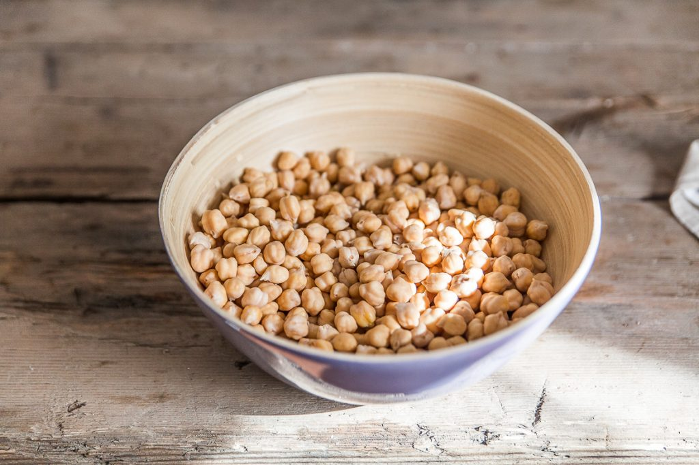
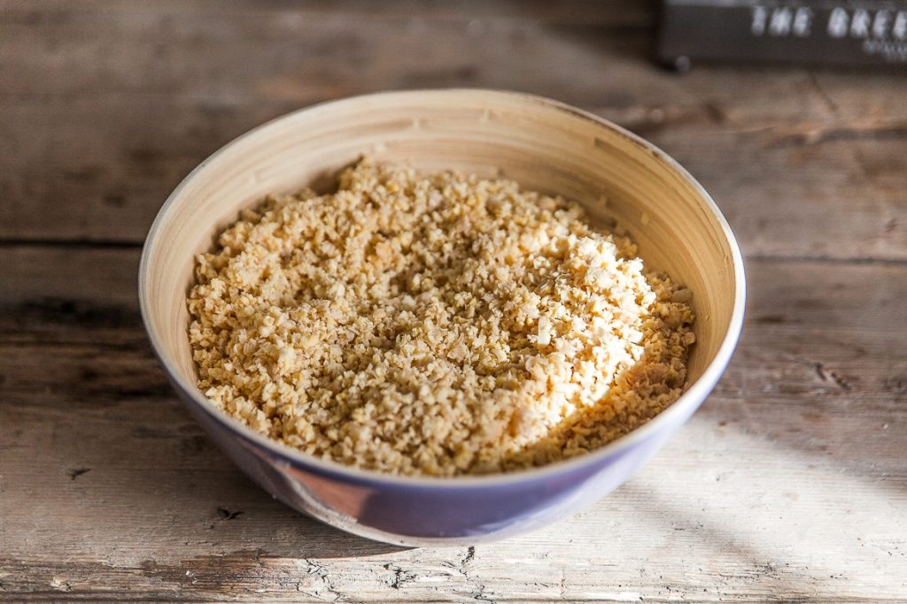
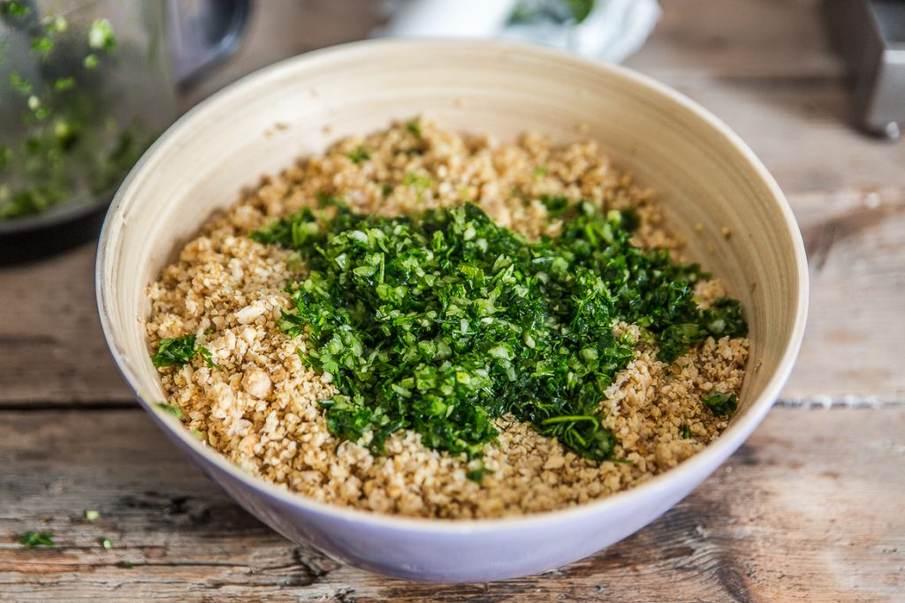
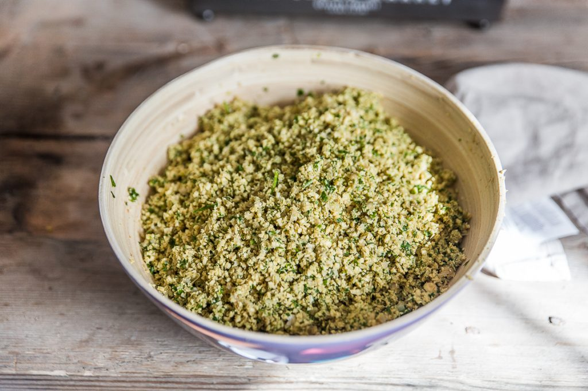
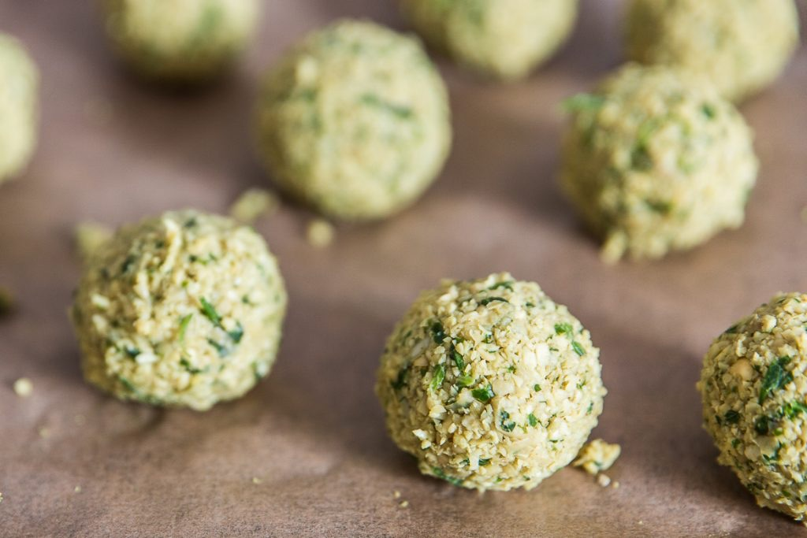

Falafels au four

Aujourd’hui je vous retrouve une recette déjà présente sur le blog mais pour laquelle j’ai testé un autre mode de cuisson! En effet, j’ai testé les falafels au four et je vous dis tout plus bas!
Tout d’abord, qui n’aime pas les falafels par ici? Sérieusement, je ne pense pas que ce soit possible!! Depuis que j’ai fait la connaissance de ces petites boulettes de pois chiche je ne peux plus m’en passer. Pour moi, c’est l’aliment sain par excellence et en plus de ça c’est juste trop trop bon. Le problème, c’est clairement la friture qui lui fait perdre tout son attrait diététique! Au-delà de la notion « healthy food », j’habite dans un petit appartement et dès que je fais frire quelque chose on en prend généralement pour trois jours, puis d’une manière générale je ne supporte pas la friture (je ne la digère pas alors de temps en temps ok mais pas davantage). Je trouve que c’est beaucoup trop gras et pour le coup plus vraiment « healthy » et même mon chéri ne supporte plus ça!
A la maison, on a donc décidé de se contenter des falafels « frits » quand on va au restaurant se faire plaisir mais sinon j’ai choisi une cuisson au four pour pouvoir en faire plus souvent et pour garder tous les bénéfices de cette recette. Beaucoup d’entre vous se demandent si les pois chiches sont caloriques. Sans rentrer dans les détails des calories, sachez que les pois chiches sont très pauvres en lipides et très riches en protéines mais aussi en fibres ce qui favorisent le transit! Alors non les pois chiches ne sont pas caloriques, bien au contraire alors ne vous en privez pas (peut-être que je devrais faire une fiche « aliment » sur ces petites pépites)! Cette légumineuse est aussi très riche en minéraux et vitamines mais trop souvent boudée à cause de sa mauvaise « digestibilité ». Tout d’abord, sachez que pour garder tous les apports des pois chiches il faut éviter d’ajouter du bicarbonate de soude dans vos falafels (ou autre préparations) car il détruit la vitamine B1 présent dans les pois chiches. Pour favoriser la digestibilité, il suffit de les laisser tremper dans un grand volume d’eau et d’enlever la peau puis de bien mâcher pendant la dégustation. Une algue, l’algue kombu peut être également utilisée à la place du bicarbonate de soude.
Pour en revenir à cette recette de falafels au four, je dirai qu’il faut les manger le jour même car les falafels ont tendance à se ramollir si on ne les consomme pas immédiatement. Si jamais ils vous en restent sachez que vous pouvez les faire réchauffer dans une poêle et ils retrouveront tout leur croquant 😉
Je vous laisse découvrir tout ça avec la recette et je vous dis à très vite avec une nouvelle recette!
Enregistrer
Enregistrer
Enregistrer
Enregistrer
Enregistrer
Enregistrer
Enregistrer
Enregistrer
Enregistrer
Enregistrer
Enregistrer
Enregistrer
Enregistrer
Enregistrer
Enregistrer
Enregistrer
Enregistrer
Enregistrer
Enregistrer
Enregistrer
Enregistrer
Enregistrer
Enregistrer
Enregistrer
Enregistrer
Enregistrer
Enregistrer
Enregistrer
Enregistrer
Enregistrer
Ingrédients
- Pois chiches secs - 500g
- Oignon - 1
- Gousse d'ail - 4
- Coriandre fraîche - 1/2 bouquet
- Persil - 1/2 bouquet
- Cumin - 2 càc
- Cardamome - 1 càc
- Sel - 1 pincée
Instructions
- Laisser tremper les pois chiches au moins toute une nuit dans au minimum deux fois leur volume en eau froide
- Préchauffez le four à 180°
- Choix 1 : Égoutter les pois chiches et les laisser sécher (au moins deux heures) entre deux feuilles de papier absorbant (c'est très très important qu'ils soient bien secs!!)
- Choix 2 : Cuire vos pois chiches dans un grand volume d'eau pendant 1h-1h30 puis laisser les entièrement sécher Personnellement j'opte pour le choix 1.
- Mettre les pois chiches dans votre mixeur et donner de légères impulsions (le but n'est pas d'obtenir une purée alors allez-y doucement. Répéter l’opération plusieurs fois.) Il faut obtenir des pois chiches finement hachés et qui s’agglomèrent entre eux (faites le test avec vos mains en prenant un peu de pois chiches, ils doivent facilement former une boule)
- Ajouter les épices aux pois chiches hachés et une pincée de sel
- Hacher très finement l'oignon, l'ail, le persil et la coriandre fraîche Si vous nettoyez vos herbes fraîches, faites les correctement sécher c'est très important pour avoir des falafels qui se tiennent
- Incorporer les herbes hachées, oignons, ail au mélange de pois chiche et d'épices
- Mélanger. Normalement vous devez constater que votre préparation s’agglomère facilement
- Enfourner les falafels à 180° pendant 20 à 25 minutes en retournant les falafels à mi-cuisson pour qu'ils soient dorés de chaque côté. La durée de cuisson peut varier selon la taille des falafels et votre four.
- Servir chaud, déguster tiède avec une sauce tahine + citron ou yaourt + menthe et du bon pain pita
- Ceux qui veulent accompagner les falafels de houmous maison ou baba ganoush les deux recettes sont sur le blog!





Les tips de la communauté
Recette largement testée avec des retours mitigés. Beaucoup apprécient l'alternative sans friture, mais plusieurs utilisateurs rapportent une texture friable ou trop sèche malgré le respect de la recette.
Astuces
- Bien sécher les pois chiches avant utilisation pour la cohésion
- Servir avec une sauce au yaourt menthe-citron pour compenser la sécheresse
- Ajouter un peu d'eau à la pâte si elle est trop difficile à façonner
- Faire cuire au four plutôt qu'en friture pour une version diététique
- Mouler les boules dans des cercles à pâtisserie pour une forme régulière
Variantes suggérées
- Utiliser du poulet fermier à la place du gibier
- Adapter les quantités pour faire un burger sain avec les falafels
- Remplacer par du canard
- Version burger avec pain pita, tomates et sauce yaourt
Ajustements signalés
- Texture friable : cause probable - pois chiches insuffisamment secs, ajouter liant si nécessaire
- Résultat trop sec à la cuisson : normal en four, bien accompagner d'une sauce
- Cardamome peut dominer - ajuster les épices selon préférence